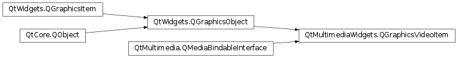

QGraphicsVideoItem¶
Synopsis¶
Functions¶
- def
aspectRatioMode() - def
nativeSize() - def
offset() - def
setAspectRatioMode(mode) - def
setOffset(offset) - def
setSize(size) - def
size()
Signals¶
- def
nativeSizeChanged(size)
Detailed Description¶
The
QGraphicsVideoItemclass provides a graphics item which display video produced by aPySide2.QtMultimedia.QMediaObject.Attaching a
QGraphicsVideoItemto aPySide2.QtMultimedia.QMediaObjectallows it to display the video or image output of that media object. AQGraphicsVideoItemis attached to a media object by passing a pointer to thePySide2.QtMultimedia.QMediaObjectto thePySide2.QtMultimediaWidgets.QGraphicsVideoItem.setMediaObject()function.player = new QMediaPlayer(this); QGraphicsVideoItem *item = new QGraphicsVideoItem; player->setVideoOutput(item); graphicsView->scene()->addItem(item); graphicsView->show(); player->setMedia(QUrl("http://example.com/myclip4.ogv")); player->play();Note : Only a single display output can be attached to a media object at one time.
-
class
PySide2.QtMultimediaWidgets.QGraphicsVideoItem([parent=nullptr])¶ Parameters: parent – PySide2.QtWidgets.QGraphicsItemConstructs a graphics item that displays video.
The
parentis passed toPySide2.QtWidgets.QGraphicsItem.
-
PySide2.QtMultimediaWidgets.QGraphicsVideoItem.aspectRatioMode()¶ Return type: PySide2.QtCore.Qt.AspectRatioMode
-
PySide2.QtMultimediaWidgets.QGraphicsVideoItem.nativeSize()¶ Return type: PySide2.QtCore.QSizeF
-
PySide2.QtMultimediaWidgets.QGraphicsVideoItem.nativeSizeChanged(size)¶ Parameters: size – PySide2.QtCore.QSizeF
-
PySide2.QtMultimediaWidgets.QGraphicsVideoItem.offset()¶ Return type: PySide2.QtCore.QPointF
-
PySide2.QtMultimediaWidgets.QGraphicsVideoItem.setAspectRatioMode(mode)¶ Parameters: mode – PySide2.QtCore.Qt.AspectRatioMode
-
PySide2.QtMultimediaWidgets.QGraphicsVideoItem.setOffset(offset)¶ Parameters: offset – PySide2.QtCore.QPointF
-
PySide2.QtMultimediaWidgets.QGraphicsVideoItem.setSize(size)¶ Parameters: size – PySide2.QtCore.QSizeF
-
PySide2.QtMultimediaWidgets.QGraphicsVideoItem.size()¶ Return type: PySide2.QtCore.QSizeF
© 2018 The Qt Company Ltd. Documentation contributions included herein are the copyrights of their respective owners. The documentation provided herein is licensed under the terms of the GNU Free Documentation License version 1.3 as published by the Free Software Foundation. Qt and respective logos are trademarks of The Qt Company Ltd. in Finland and/or other countries worldwide. All other trademarks are property of their respective owners.